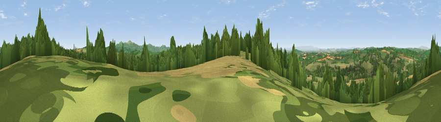

Viewpoint near Fromes Hill
#8691 in England · top 22% of its area beats it · near Fromes HillWhere it is
The exact computed spot (SO 67675 47825). Click the marker for map links.
The view, rendered

A 360° render of this exact spot computed from the terrain model, tree cover and land cover — summer colours, afternoon light, calibrated against photographs of famous viewpoints. Real trees, hedges and buildings will differ in detail.
The panorama
Grey silhouette: terrain skyline in each direction (720 bearings, Earth curvature and refraction included). Dashed green: skyline with trees (+15 m) and buildings (+8 m) as obstacles. Blue strip: how far the ground is visible on each bearing.
Where the view opens
Wedge length = distance to the farthest visible ground on that bearing (vegetation-aware). Rings at 10, 25 and 50 km.
What fills the view
44% grassland · 28% cropland · 27% woodland · 1% built-up
Angular shares of the visible panorama (visual magnitude), not map area. Landscape diversity 0.49 (0–1 Shannon).
Key numbers
More beautiful places nearby
The staircase of upgrades: each row has a higher view potential than everything closer. Driving times are estimates from straight-line distance, calibrated against real road routing — check an actual route before setting out.
| Place | Direction | Drive | Score |
|---|---|---|---|
| Viewpoint near Bishop's Frome | NNE · 1 km | ~3 min | 69.0 |
| Viewpoint near Longley Green | ENE · 4 km | ~9 min | 69.3 |
| High Grove Hill | E · 7 km | ~15 min | 74.2 |
| Viewpoint near Coddington | SE · 8 km | ~16 min | 76.4 |
| Viewpoint near West Malvern | E · 9 km | ~18 min | 81.4 |
| North Hill | E · 9 km | ~18 min | 86.8 |
| Worcestershire Beacon | ESE · 10 km | ~19 min | 87.1 |
| Viewpoint near West Quantoxhead | SSW · 119 km | ~143 min | 87.9 |
52.12778, -2.47361 · source: screening · position refined by local search. Computed location — check access rights before visiting.